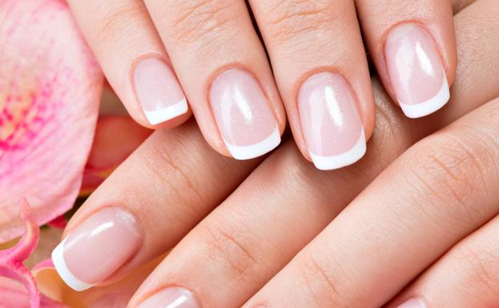

Escuelita


Kapping Gel es La manicura kapping consiste en aplicar una fina capa de acrílico o gel fortificador sobre la uña que actúa como una barrera protectora. A diferencia de las uñas esculpidas, este baño en gel kapping no alarga la uña natural sino que acompaña el crecimiento de la misma y dura hasta unos 20 días

Soft Gel: Seguramente has escuchado hablar en el salón de belleza sobre las uñas soft gel. Hay muchos tipos de uñas esculpidas pero las soft gel son las favoritas del momento por una serie de beneficios y porque su aplicación paso a paso es más rápido. Hay muchísimos diseños que se pueden realizar con este método de las uñas esculpidas en soft gel, no hay ningún límite en cuanto a dejar volar la imaginación y crear nuevos dibujos o creaciones en las uñas. El día de hoy vamos a responder todas tus dudas sobre este tipo de uñas soft gel desde cómo se aplican hasta cómo quitarlas.